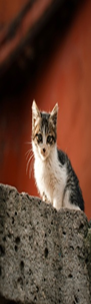
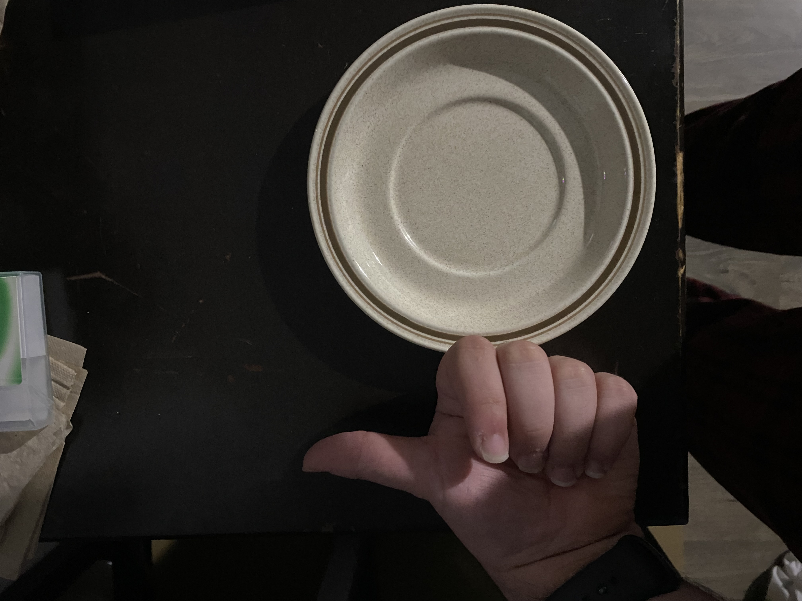
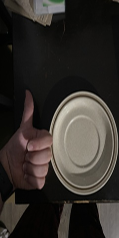

Original Image
Click to open the image in its original JPG format: Original Original as a GIF Greyscale Black and White
This page is a hands on lesson in how images work on the web. I took two pictures, one downloaded from Pexels and one that I shot myself, and ran each through the same set of changes: converting file formats, shrinking with CSS, resizing in an editor, and stretching and enlarging on purpose. Seeing the results side by side shows how pixel size, file size, format, and proportions all affect what a visitor sees and how quickly the page loads.
I picked this photo because I thought it was cute. It was taken by fotovegraf, a photographer on Pexels who photographs things you would see in everday life, usually focusing on a single subject against a natural background. The image shows a white and gray cat sitting on a stone wall in front of a red background. The original is a JPG that is 3448 by 5168 pixels and 1.24 MB.
Click to open the image in its original JPG format: Original Original as a GIF Greyscale Black and White
Here the original file is shown at 400 pixels wide using inline CSS. The browser still downloads the whole file, so the page pays for every pixel it hides.
This copy was resized to 400 by 600 pixels in an image editor, so the file itself is small. I still set its size in CSS so the browser reserves the space while it loads.
Each of these keeps one dimension of the 400 by 600 version and shrinks the other by 33%, then by 33% again. The first two are squashed flat and the last two are squeezed thin.

Both images below use the same CSS size of 300 by 450 pixels. The one on the right was only 100 by 150 pixels to begin with, so the browser has to invent pixels to stretch it.
I took this photo myself with my phone. I chose a plate because it is perfectly round, which makes it easy to see when an image has been stretched out of proportion. [Describe the photo and why you set it up this way.] The original is a JPG that is 3024 by 4032 pixels and 1.57 MB.
Click to open the image in its original JPG format: Original Original as a GIF Greyscale Black and White
Here the original file is shown at 360 pixels wide using inline CSS. The browser still downloads the whole file, so the page pays for every pixel it hides.

This copy was resized to 360 by 480 pixels in an image editor, so the file itself is small. I still set its size in CSS so the browser reserves the space while it loads.
Each of these keeps one dimension of the 360 by 480 version and shrinks the other by 33%, then by 33% again. The plate is no longer round in any of them, which makes the distortion easy to spot.

Both images below use the same CSS size of 270 by 360 pixels. The one on the right was only 90 by 120 pixels to begin with, so the browser has to invent pixels to stretch it.